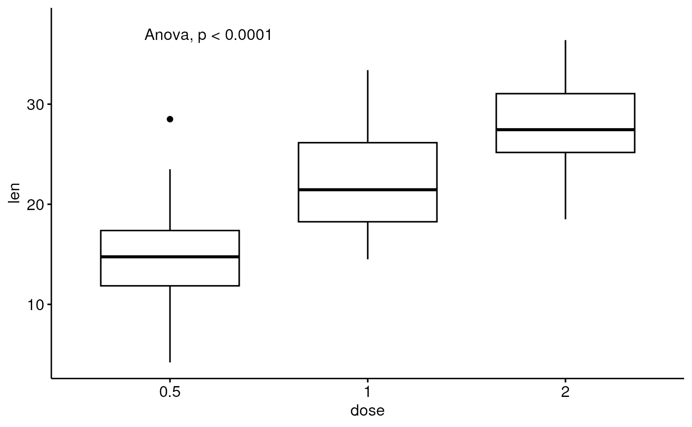
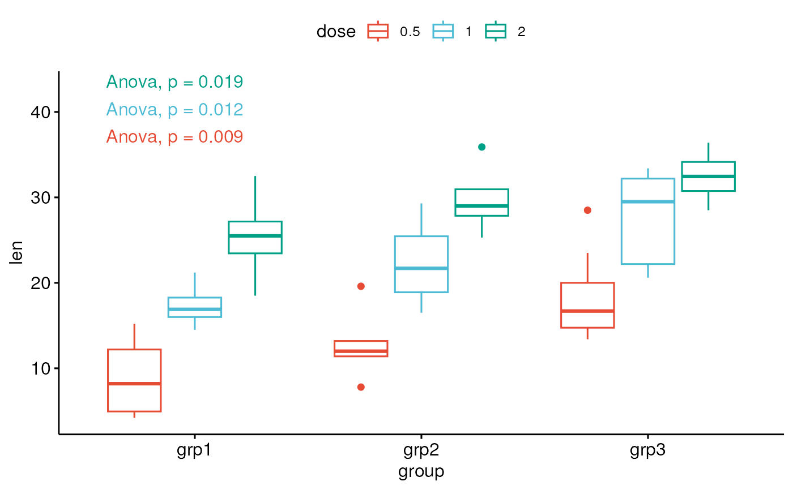

Adds automatically one-way and two-way ANOVA test p-values to a ggplot, such as box blots, dot plots and stripcharts.
stat_anova_test( mapping = NULL, data = NULL, method = c("one_way", "one_way_repeated", "two_way", "two_way_repeated", "two_way_mixed"), wid = NULL, group.by = NULL, type = NULL, effect.size = "ges", error = NULL, correction = c("auto", "GG", "HF", "none"), label = "{method}, p = {p.format}", label.x.npc = "left", label.y.npc = "top", label.x = NULL, label.y = NULL, step.increase = 0.1, p.adjust.method = "holm", significance = list(), geom = "text", position = "identity", na.rm = FALSE, show.legend = FALSE, inherit.aes = TRUE, parse = FALSE, ... )
Arguments
| mapping | Set of aesthetic mappings created by |
|---|---|
| data | The data to be displayed in this layer. There are three options: If A A |
| method | ANOVA test methods. Possible values are one of
|
| wid | (factor) column name containing individuals/subjects identifier.
Should be unique per individual. Required only for repeated measure tests
( |
| group.by | (optional) character vector specifying the grouping variable; it should be used only for grouped plots. Possible values are :
|
| type | the type of sums of squares for ANOVA. Allowed values are either
1, 2 or 3. |
| effect.size | the effect size to compute and to show in the ANOVA results. Allowed values can be either "ges" (generalized eta squared) or "pes" (partial eta squared) or both. Default is "ges". |
| error | (optional) for a linear model, an lm model object from which the
overall error sum of squares and degrees of freedom are to be calculated.
Read more in |
| correction | character. Used only in repeated measures ANOVA test to specify which correction of the degrees of freedom should be reported for the within-subject factors. Possible values are:
|
| label | character string specifying label. Can be:
. |
| label.x.npc, label.y.npc | can be
|
| label.x, label.y |
|
| step.increase | numeric value in with the increase in fraction of total height for every additional comparison to minimize overlap. The step value can be negative to reverse the order of groups. |
| p.adjust.method | method for adjusting p values (see
|
| significance | a list of arguments specifying the signifcance cutpoints
and symbols. For example, In other words, we use the following convention for symbols indicating statistical significance:
|
| geom | The geometric object to use to display the data, either as a
|
| position | Position adjustment, either as a string naming the adjustment
(e.g. |
| na.rm | If FALSE (the default), removes missing values with a warning. If TRUE silently removes missing values. |
| show.legend | logical. Should this layer be included in the legends?
|
| inherit.aes | If |
| parse | If TRUE, the labels will be parsed into expressions and displayed
as described in |
| ... | other arguments to pass to
|
Computed variables
DFn: Degrees of Freedom in the numerator (i.e. DF effect).
DFd: Degrees of Freedom in the denominator (i.e., DF error).
ges: Generalized Eta-Squared measure of effect size. Computed only when the option
effect.size = "ges".pes: Partial Eta-Squared measure of effect size. Computed only when the option
effect.size = "pes".F: F-value.
p: p-value.
p.adj: Adjusted p-values.
p.signif: P-value significance.
p.adj.signif: Adjusted p-value significance.
p.format: Formated p-value.
p.adj.format: Formated adjusted p-value.
n: number of samples.
Examples
# Data preparation #%%%%%%%%%%%%%%%%%%%%%%%%%%%%%%%%%%%%%%%%% # Transform `dose` into factor variable df <- ToothGrowth df$dose <- as.factor(df$dose) # Add individuals id df$id <- rep(1:10, 6) # Add a random grouping variable set.seed(123) df$group <- sample(factor(rep(c("grp1", "grp2", "grp3"), 20))) df$len <- ifelse(df$group == "grp2", df$len+2, df$len) df$len <- ifelse(df$group == "grp3", df$len+7, df$len) head(df, 3)#> len supp dose id group #> 1 4.2 VC 0.5 1 grp1 #> 2 18.5 VC 0.5 2 grp3 #> 3 14.3 VC 0.5 3 grp3# Basic boxplot #%%%%%%%%%%%%%%%%%%%%%%%%%%%%%%%%%%%%%%%%% # Create a basic boxplot # Add 5% and 10% space to the plot bottom and the top, respectively bxp <- ggboxplot(df, x = "dose", y = "len") + scale_y_continuous(expand = expansion(mult = c(0.05, 0.1))) # Add the p-value to the boxplot bxp + stat_anova_test()# Change the label position # Using coordinates in data units bxp + stat_anova_test(label.x = "1", label.y = 10, hjust = 0)# Format the p-value differently custom_p_format <- function(p) { rstatix::p_format(p, accuracy = 0.0001, digits = 3, leading.zero = FALSE) } bxp + stat_anova_test( label = "Anova, italic(p) = {custom_p_format(p)}{p.signif}" )#> Warning: Computation failed in `stat_compare_multiple_means()`# Show a detailed label in italic bxp + stat_anova_test(label = "as_detailed_italic")# Faceted plots #%%%%%%%%%%%%%%%%%%%%%%%%%%%%%%%%%%%%%%%%% # Create a ggplot facet bxp <- ggboxplot(df, x = "dose", y = "len", facet.by = "supp") + scale_y_continuous(expand = expansion(mult = c(0.05, 0.1))) # Add p-values bxp + stat_anova_test()# Grouped plots #%%%%%%%%%%%%%%%%%%%%%%%%%%%%%%%%%%%%%%%%% bxp2 <- ggboxplot(df, x = "group", y = "len", color = "dose", palette = "npg") # For each x-position, computes tests between legend groups bxp2 + stat_anova_test(aes(group = dose), label = "p = {p.format}{p.signif}")# For each legend group, computes tests between x variable groups bxp2 + stat_anova_test(aes(group = dose, color = dose), group.by = "legend.var")# Two-way ANOVA: Independent measures #%%%%%%%%%%%%%%%%%%%%%%%%%%%%%%%%%%%%%%%%% # Visualization: box plots with p-values # Two-way interaction p-values between x and legend (group) variables bxp3 <- ggboxplot( df, x = "supp", y = "len", color = "dose", palette = "jco" ) bxp3 + stat_anova_test(aes(group = dose), method = "two_way")if (FALSE) { # One-way repeatead measures ANOVA #%%%%%%%%%%%%%%%%%%%%%%%%%%%%%%%%%%%%%%%%% df$id <- as.factor(c(rep(1:10, 3), rep(11:20, 3))) ggboxplot(df, x = "dose", y = "len") + stat_anova_test(method = "one_way_repeated", wid = "id") # Two-way repeatead measures ANOVA #%%%%%%%%%%%%%%%%%%%%%%%%%%%%%%%%%%%%%%%%% df$id <- as.factor(rep(1:10, 6)) ggboxplot(df, x = "dose", y = "len", color = "supp", palette = "jco") + stat_anova_test(aes(group = supp), method = "two_way_repeated", wid = "id") # Grouped one-way repeated measures ANOVA ggboxplot(df, x = "dose", y = "len", color = "supp", palette = "jco") + stat_anova_test(aes(group = supp, color = supp), method = "one_way_repeated", wid = "id", group.by = "legend.var") }